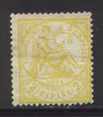
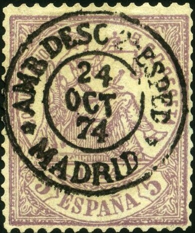
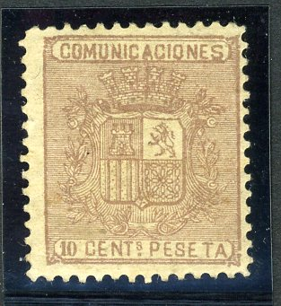
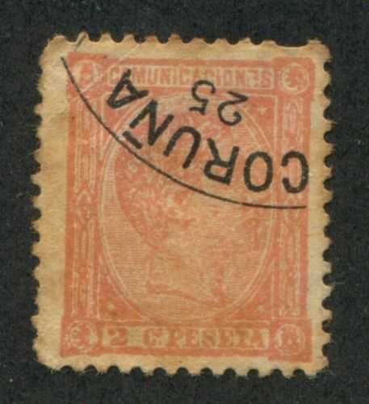

Return To Catalogue - Spain overview - Spain 'Comunicaciones' 1870-1872 - Spain 'Comunicaciones' 1873 - Inscription 'Comunicaciones' 1876-1889
Note: on my website many of the
pictures can not be seen! They are of course present in the
catalogue;
contact me if you want to purchase it.



2 c yellow 5 c lilac 10 c blue 20 c green 25 c brown 40 c violet 50 c orange 1 P green 4 P red 10 P black
These stamps have perforation 14.
Value of the stamps |
|||
vc = very common c = common * = not so common ** = uncommon |
*** = very uncommon R = rare RR = very rare RRR = extremely rare |
||
| Value | Unused | Used | Remarks |
| 2 c | *** | ** | |
| 5 c | *** | ** | |
| 10 c | ** | * | |
| 20 c | R | R | |
| 25 c | *** | *** | |
| 40 c | R | ** | |
| 50 c | *** | ** | |
| 1 P | *** | *** | With hole cancel: c |
| 4 P | RR | RR | With hole cancel: ** |
| 10 P | RR | RRR | With hole cancel: *** |
Stamps with a hole are used for telegraphic purposes (and are of much less value). Two errors exist: the 25 c in the wrong colour violet and the 40 c in the wrong colour brown (both very rare).
Similar stamps with inscription "DERECHO JUDICIAL" are fiscal stamps of the Spanish Westindies.


Postal forgeries of the 10 c and 1 P values

Block of four 10 c postal forgeries.
Postal forgeries exist of the values 10 c, 1 P, 4 P and 10 P (2 types). They are fully described in the book 'Postal Forgeries of the World' by H.F.L. Fletcher.
I have seen forgeries of these stamps, examples:
Segui forgeries:
Imperforate pair of 20 c Segui forgeries
Zoom-in on the horizontal line in the Segui forgeries.
Probably all Segui forgeries.
The Segui forgeries have a thick horizontal line joining the upper left ornamental triangle with the central circle (just besides the second "C" of "COMUNICACIONES"). There is also a white spot in the "S" of "ESPANA" (not always visible?). I have also seen a Segui forgery of the 1 P value. I've also seen imperforate Segui forgeries of the 5 c and 20 c values.

Another Segui forgery with a "AMB DESC 2 ESPED MADRID 24 OCT
74" cancel.
Sperati forgeries:


Sperati forgeries of the 4 P and 10 P values.
Sperati made a forgery of the 4 P value (both
cancelled and uncancelled). It can be distinguished by the fact
that it has a broken second "I" of
"COMUNICACIONES", it appears as if there is a dot on
this "I". The "A" of this same word has a bad
right leg. There is a break in the "S" of
"PESETA" and finally there is a dot to the right side
of the leg of the second "A" of "ESPANA".
Sperati also made a forgery of the 10 P value. It has a broken
first "N" in "COMUNICACIONES", the second
"E" of "PESETAS" is broken at the top and the
"1" of "1874" has a black spot at the left
hand side.
Other forgeries:


(Forgeries)

10 c brown
This stamp has perforation 14. Similar stamps exists with inscription "ULTRAMAR 1875", issued for Cuba. Postal stationery in the same design exists: 5 c de peseta violet (issued 1875).
Value of the stamps |
|||
vc = very common c = common * = not so common ** = uncommon |
*** = very uncommon R = rare RR = very rare RRR = extremely rare |
||
| Value | Unused | Used | Remarks |
| 10 c | ** | c | |

I've been told that this is a postal forgery of this stamp.
2 Cs Peseta brown 5 Cs Peseta lilac 10 Cs Peseta blue 20 Cs Peseta orange 25 Cs Peseta red 40 Cs Peseta brown 50 Cs Peseta violet 1 Peseta black 4 Peseta green 10 Peseta blue
The above stamps are printed on paper with a blue security print on the back with a number varying from 1 to 100. Postal stationery in the value 5 c blue exists (issued 1876).
Value of the stamps |
|||
vc = very common c = common * = not so common ** = uncommon |
*** = very uncommon R = rare RR = very rare RRR = extremely rare |
||
| Value | Unused | Used | Remarks |
| 2 c | *** | ** | |
| 5 c | *** | *** | |
| 10 c | ** | c | |
| 20 c | R | R | |
| 25 c | *** | *** | |
| 40 c | *** | *** | |
| 50 c | R | *** | |
| 1 P | R | R | |
| 4 P | RR | RR | |
| 10 P | RR | RR | |
These Stamps with inscription 'Ultramar' see Cuba
Telegraphic cancels (a punched hole) can often be found on the higher values (value: * to ***):
Telegraph cancel (hole)
I have seen some of the higher values with forged postal cancel.
Forgeries exist, examples:


Imperforate forgeries, most likely made by Segui?

Some kind of cut from a souvenir card, which was perforated?
I know that Sperati made forgeries of the 4 Peseta and 10 Peseta stamps. The next picture is a Sperati reproduction of the 4-pesetas stamp, it seems to have appeared for the first time in 1942. On this forgery the paper, perforation, and cancel are all genuine. He made this forgery by chemically removing the design of a stamp of low value (leaving the cancel intact). The following forgery was handstamped 'SPERATI REPRODUCTION' on the reverse by the British Philatelic Association in violet:


Front and backside of the 4 P Sperati forgery. Sperati also
forged the background pattern (he used the numbers '3', '17',
'21', '22', '23', '31', '50' and '80'.


Sperati forgeries of the 4 P and 10 P stamps.
The distinghuishing characteristics of the 4 P Sperati forgery:
1) A triangular flaw appears under the tip of the
nose
2) The top right of the first "O" of
"COMUNICACIONES" is faulty, there is a white dot in the
center of the "M" of this word and a white dot in the
lower left part of the first "N" of the same word
3) There are also some errors in the word "PESETAS",
such as a break in the head of the "P", a break in the
bottom of the first "S" etc.
The distinghuishing characteristics of the 10 P Sperati forgery:
1) There is a small break in the bottom of the
circular outline of the lower left ornament (with the lion).
2) The bottom of the "P" of "PESETAS" is
broken at the left.
3) There is a break in the ellipse above the "T" of
"PESETAS".
Inscription 'Comunicaciones' 1876-1889
Stamps - Briefmarken - Timbres-Poste - Postzegels - Francobolli - Estampillas


{kind=link}
{kind=link}
{kind=link}
{kind=link}
{kind=link}
{kind=link}